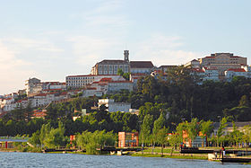

Coimbra OTE é uma cidade portuguesa, capital do Distrito de Coimbra, da Região Centro de Portugal, sub-região estatística do Baixo Mondego, e comunidade intermunicipal da Região de Coimbra. Com 105 842 habitantes (2011) no seu perímetro urbano, é centro de referência e maior cidade da Região Centro, antiga região das Beiras e província da Beira Litoral, que reúne cerca de 2,3 milhões de habitantes (2013).
Coimbra é uma cidade historicamente universitária, por causa da Universidade de Coimbra, uma das mais antigas da Europa e das maiores de Portugal, fundada em 1290 como Estudo Geral Português por D. Dinis em Lisboa que depois várias instalações nas duas cidades, se fixou definitivamente na cidade do Mondego em 1537. Na história recente a população estudantil da Universidade teve um papel importante ao ser ativamente defensora dos valores da liberdade e democracia frente à ditadura do Estado Novo. Uma das cidades mais antigas do país, foi a capital de Portugal antes de Lisboa, até 1255, e nela está o primeiro Panteão Nacional, o Mosteiro de Santa Cruz.
As duas margens de Coimbra são banhadas pelo rio Mondego, proveniente da Serra da Estrela, no sentido Este-Oeste, sendo sede de um município com 319,4 km² de área e 143 396 habitantes (2011), subdividido em 18 freguesias. Este é limitado a norte pelo município da Mealhada, a leste por Penacova, Vila Nova de Poiares e Miranda do Corvo, a sul por Condeixa-a-Nova, a oeste por Montemor-o-Velho e a noroeste por Cantanhede.
É considerada uma das mais importantes cidades portuguesas, devido a infraestruturas, organizações e empresas nela instaladas para além da sua importância histórica e privilegiada posição geográfica no centro de Portugal continental, entre as cidades de Lisboa e do Porto. Ao nível de serviços oferecidos, é acima de tudo no ensino e nas tecnologias ligadas à saúde que a cidade consegue maior notoriedade. A população estudantil da cidade ronda os 37 mil matriculados, parte no ensino superior público não politécnico, parte no ensino superior público politécnico e parte no ensino superior privado.
O feriado municipal ocorre a 4 de Julho, em memória da rainha Santa Isabel de Aragão, padroeira da cidade conhecida popularmente apenas por rainha santa. Foi Capital Nacional da Cultura em 2003. No dia 22 de Junho de 2013, Universidade de Coimbra, Alta e Sofia, foram declaradas Património Mundial da Humanidade pela UNESCO.
